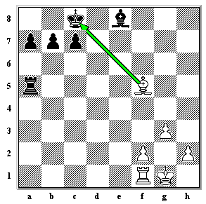
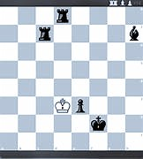
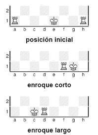
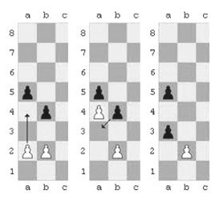
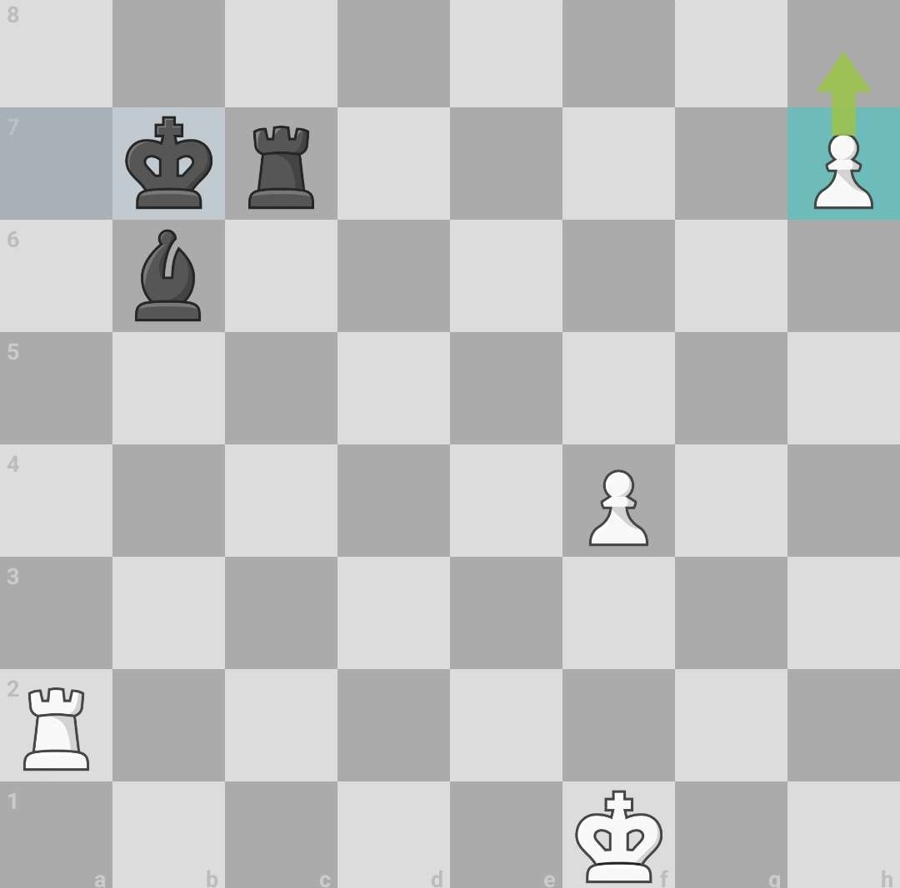
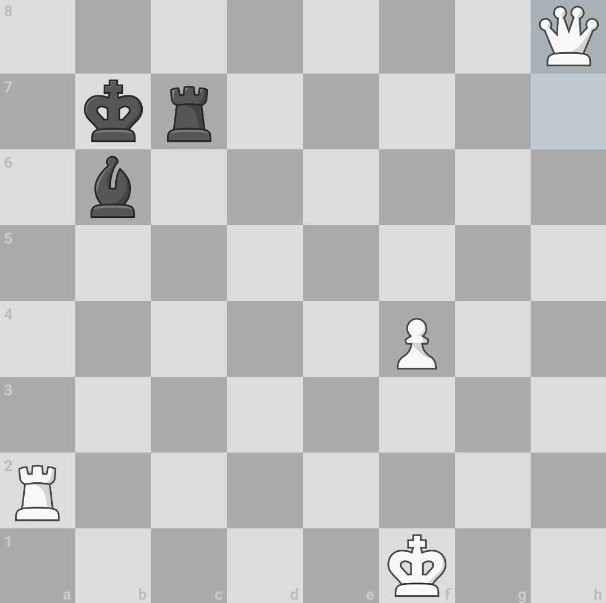

Reglas del Ajedrez
En el ajedrez se sigue una amplia cantidad de reglas que abarcan desde el posicionamiento inicial de las piezas de acuerdo a los colores del tablero, hasta distintas resoluciones y jugadas especiales que solo pueden ocurrir cuando se cumplen ciertas condiciones.
En esta sección vas a poder apreciar las reglas básicas que se requiere saber para jugar al ajedrez.
Reglas básicas
- Las piezas blancas realizan el primer movimiento de la partida.
- Los jugadores se turnan para mover una sola pieza por vez.
- No es posible mover una pieza a una casilla ocupada por otra pieza del mismo color.
- Si una pieza termina su movimiento en una casilla ocupada por una pieza rival, esta es capturada y se retira del tablero.
- El rey no puede moverse a una casilla atacada por una pieza enemiga.
Jaque y jaque mate
Jaque
Cuando el rey de un jugador está bajo amenaza de captura, se dice que está en jaque. El jugador debe realizar un movimiento que elimine la amenaza de jaque en su próximo turno.
Existen tres formas de salir del jaque:
- Mover el rey a una casilla segura.
- Capturar la pieza que está dando jaque.
- Colocar una pieza entre el rey y la pieza que da jaque.

En esa imagen se puede observar un jaque dado por el alfil blanco al rey negro. En esa posición el rey negro puede salir del jaque de cualquiera de las 3 formas mencionadas (capturar al alfil blanco con la torre negra, mover el rey a una casilla segura o poner al alfil negro en el camino).
Jaque mate
El jaque mate sucede cuando el rey está en jaque y ninguna de las opciones anteriores es posible. En ese momento la partida termina y gana el jugador que dio el jaque mate.

En esa imagen se puede observar un jaque mate dado por la torre blanca al rey negro. En esa posición el rey negro no puede salir del jaque, por lo tanto, es jaque mate.
Jugadas especiales
Enroque
El enroque es una jugada especial que permite al rey moverse dos casillas hacia la torre y, a su vez, la torre se mueve a la casilla que queda al lado del rey.
Para realizar un enroque, se deben cumplir las siguientes condiciones:
- El rey y la torre involucradas no se han movido anteriormente en la partida.
- Las casillas entre el rey y la torre deben estar despejadas.
- El rey no debe estar en jaque.
- El rey no debe pasar por una casilla atacada por una pieza enemiga ni terminar en una casilla atacada.
Existen 2 tipos de enroque: el enroque corto (o enroque del lado del rey) y el enroque largo (o enroque del lado de la dama). En el enroque corto, el rey se mueve dos casillas hacia la torre del lado del rey, y la torre se coloca al lado del rey. En el enroque largo, el rey se mueve dos casillas hacia la torre del lado de la dama, y la torre se coloca al lado del rey.

En esa imagen se puede observar una posición inicial y como queda el tablero después de realizar ambos tipos de enroque.
Captura al paso
La captura al paso es una jugada especial que permite a un peón capturar a otro peón que ha avanzado dos casillas desde su posición inicial, pasando por una casilla que podría haber sido capturada por el peón del jugador contrario. Esta captura solo puede realizarse en el turno inmediatamente después de que el peón rival haya avanzado dos casillas.

En esa imagen se puede observar como se produce y se reealiza una captura al paso.
Coronación
La coronación es una jugada especial que ocurre cuando un peón alcanza la última fila del tablero. En ese momento, el jugador puede reemplazar el peón por cualquier otra pieza (excepto el rey), generalmente se elige una dama debido a su poder y versatilidad.


En esas imagenes se puede observar un ejemplo de coronación, en la primera imagen se puede ver como el peón blanco llega a la última fila y en la segunda imagen se puede ver como el peón blanco es reemplazado por una dama blanca.
Jugadas ilegales
Una jugada ilegal es cualquier movimiento que no cumple con las reglas del ajedrez. Si un jugador realiza una jugada ilegal, el árbitro puede permitir que el jugador corrija su movimiento o puede imponer una penalización, dependiendo de las reglas del torneo o del acuerdo entre los jugadores.
Algunos ejemplos de jugadas ilegales incluyen mover una pieza a una casilla ocupada por otra pieza del mismo color, mover el rey a una casilla atacada por una pieza enemiga, o realizar un enroque cuando no se cumplen las condiciones necesarias.
Tablas
Una partida de ajedrez puede terminar en tablas, lo que significa que ninguno de los jugadores gana. Esto puede ocurrir por varias razones, como un acuerdo mutuo entre los jugadores, la falta de material suficiente para dar jaque mate, o la repetición de movimientos.
Algunas situaciones que pueden llevar a un empate incluyen:
- Regla de triple repetición: Si la misma posición se repite tres veces con el mismo jugador teniendo el turno, cualquiera de los jugadores puede reclamar tablas.
- Regla de los cincuenta movimientos: Si durante cincuenta movimientos consecutivos no se ha movido ningún peón ni se ha capturado ninguna pieza, cualquiera de los jugadores puede reclamar tablas.
- Insuficiencia de material: Si ninguno de los jugadores tiene suficiente material para dar jaque mate, la partida termina en tablas.
Un ejemplo de insuficiencia de material es cuando ambos jugadores solo tienen sus reyes en el tablero, lo que hace imposible dar jaque mate.
En resumen, las tablas son una parte importante del ajedrez y pueden ocurrir por diversas razones, reflejando la complejidad y la estrategia del juego.